Professor Martin Paul Eve, Birkbeck, University of London
To be read. To be assessed.
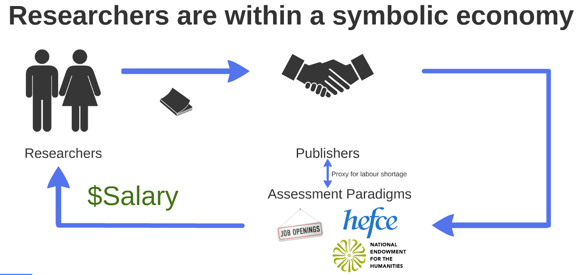
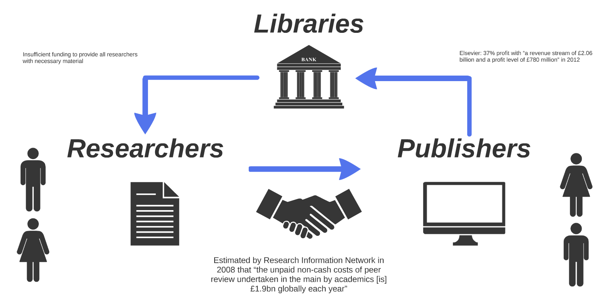
“Our fine arts were developed, their types and uses were established, in times very different from the present, by men whose power of action upon things was insignificant in comparison with ours. But the amazing growth of our techniques, the adaptability and precision they have attained, the ideas and habits they are creating, make it a certainty that profound changes are impending in the ancient craft of the Beautiful. In all the arts there is a physical component which can no longer be considered or treated as it used to be, which cannot remain unaffected by our modern knowledge and power. For the last twenty years neither matter nor space nor time has been what it was from time immemorial. We must expect great innovations to transform the entire technique of the arts, thereby affecting artistic invention itself and perhaps even bringing about an amazing change in our very notion of art.”
Paul Valéry, Pièces sur L’Art, 1931
“In principle a work of art has always been reproducible. Man-made artifacts could always be imitated by men. [...] Around 1900 technical reproduction had reached a standard that not only permitted it to reproduce all transmitted works of art and thus to cause the most profound change in their impact upon the public; it also had captured a place of its own among the artistic processes. [...] Even the most perfect reproduction of a work of art is lacking in one element: its presence in time and space, its unique existence at the place where it happens to be.”
Walter Benjamin, "The Work of Art in the Age of Mechanical Reproduction", 1936
“The problem in each case is not that you stole from a specific person but that you undermined the artificial scarcities that allow the economy to function.”
Jaron Lanier, You Are Not a Gadget, 2010
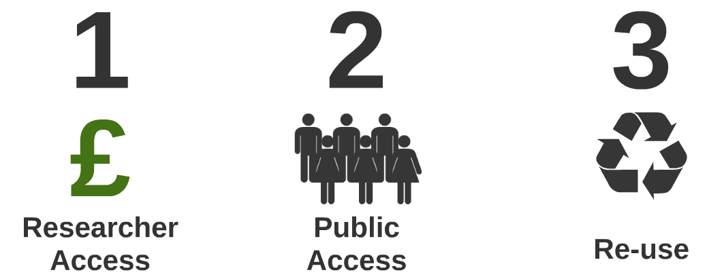
See under "serials crisis".
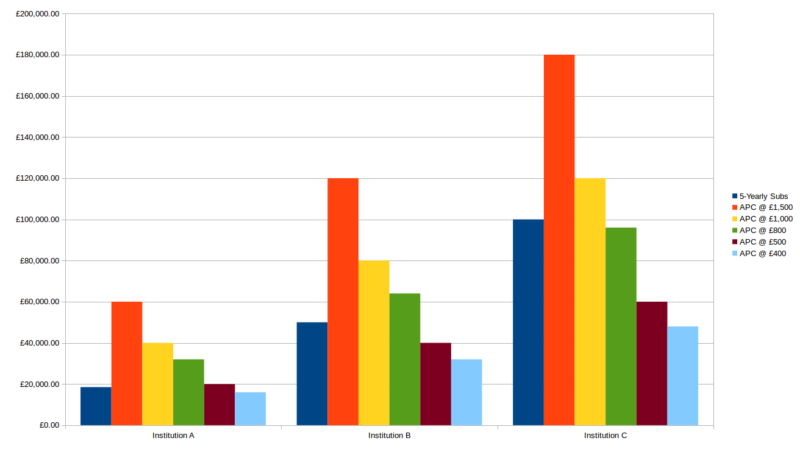
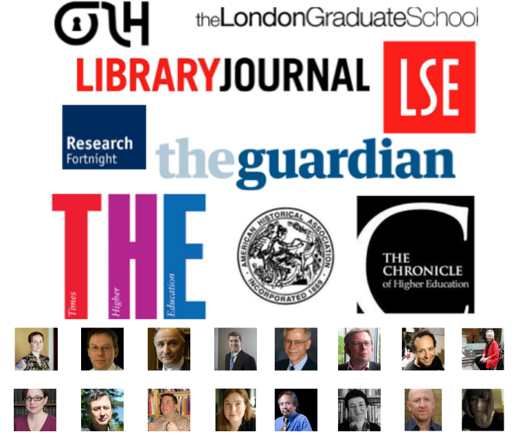
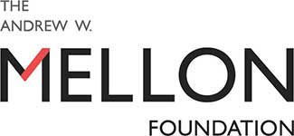
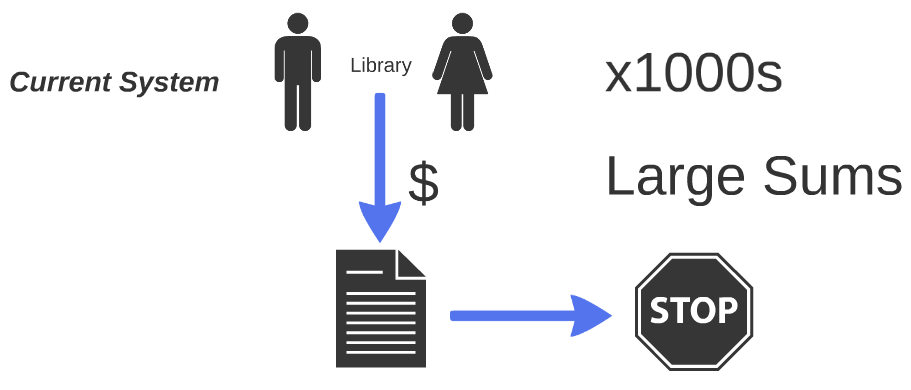
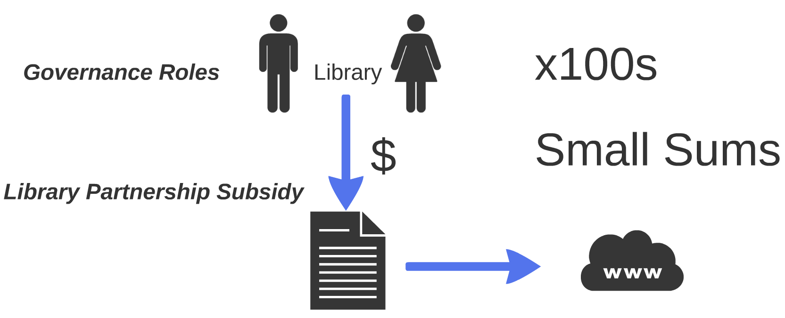
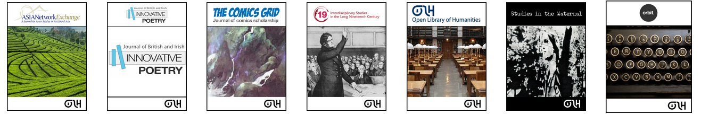
Cost per institution per article: around $1.10 per institution per article. Target of 300+ libraries by end of year three. 118,686 unique readers. Average of 131 readers per article. $0.008 per institution per reader.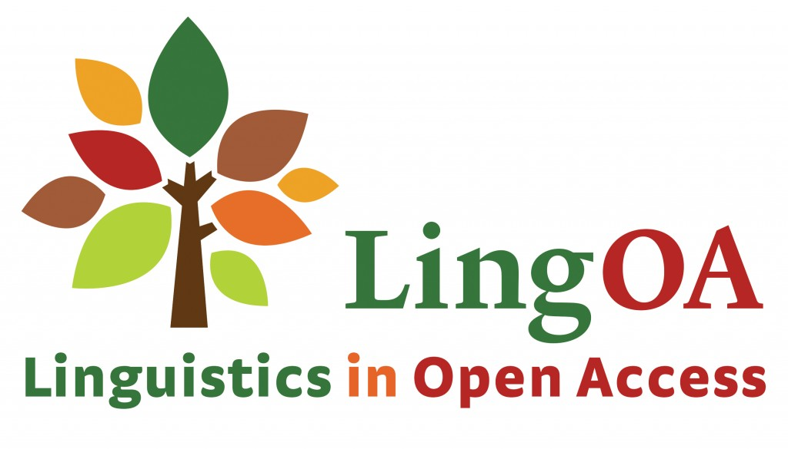
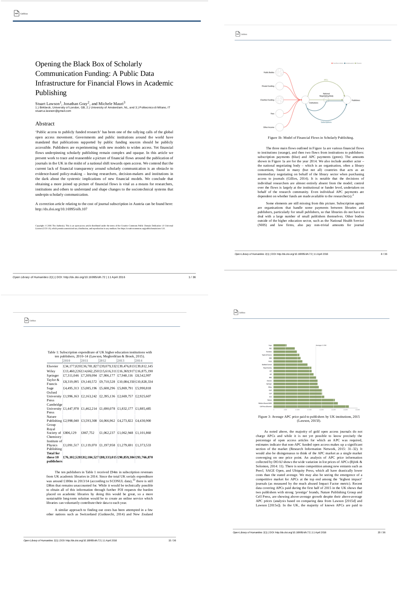
Thank you!
Presentation licensed under a CC BY-SA 3.0 license. All institutional images excluded from CC license. Available to view online at http://meve.io/CityOAWeek2016.